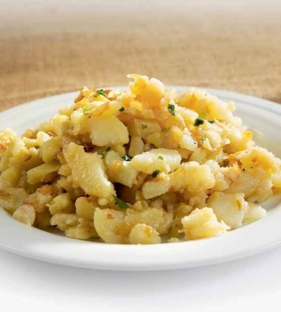

Priprava krompirja 2
Restan krompir je kuhan krompir, narezan na rezine, ki ga prepražimo na čebuli in olju ali maslu.
Pogosto ga začinimo s soljo, poprom in peteršiljem ter postrežemo kot prilogo.
Ocvrt krompir: Narezan krompir ocvremo v vročem olju do hrustljavega zlatega sloja, kot pri pomfriju ali čipsu.
